| 8주차 피드백 | 이번 주 진행 | 다음 단계 |
|---|---|---|
| 하드웨어·하위 제어 우선 | 메인보드 PCB(114×92 mm) 설계, 마운트 구멍(3.25 mm) 확인 | 메인보드 제작, 마운트 출력·자석 부착 뒤 엔코더 확인 |
| STM32G474 속도 부족 | STM32H743(480 MHz) 코어 보드 장착 설계 | — |
| 상용 FMS와 콘솔 비교 | 상용 7종 참고해 대기열·상태·실적 화면 추가 | — |
| 시연 장소와 배터리 충전 | 보드에 전압 분압 회로 반영 (핀 미배정) | 확인 필요 |
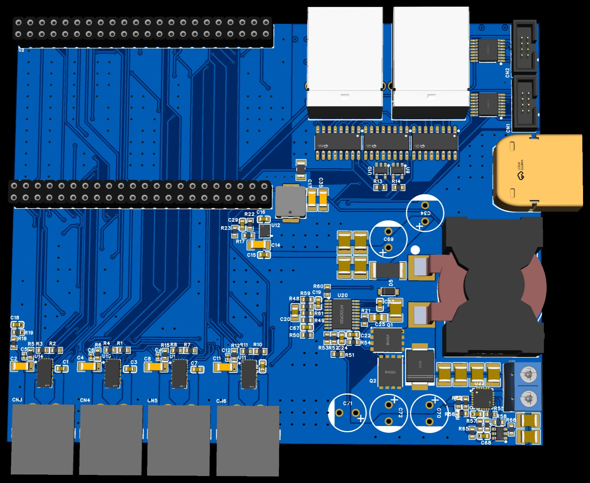
| 항목 | 7주차 | 이번 주 (V1.0.0) |
|---|---|---|
| MCU | Nucleo STM32H533RE | STM32H743 코어 보드 (2×22 헤더 장착) |
| 전원 구성 | 12 V → 5 V → 3.3 V | 배터리 보호와 Jetson 19 V 공급 추가 |
| 모터·엔코더 | DRV8244 4채널, 차동·LVDS 입력 | 7주차와 같음 (XT30 4개, RJ 2개) |
| 진행 상태 | 모터·센서 부분 회로도 | 전체 회로도와 PCB 배치 완료 (제작 전) |
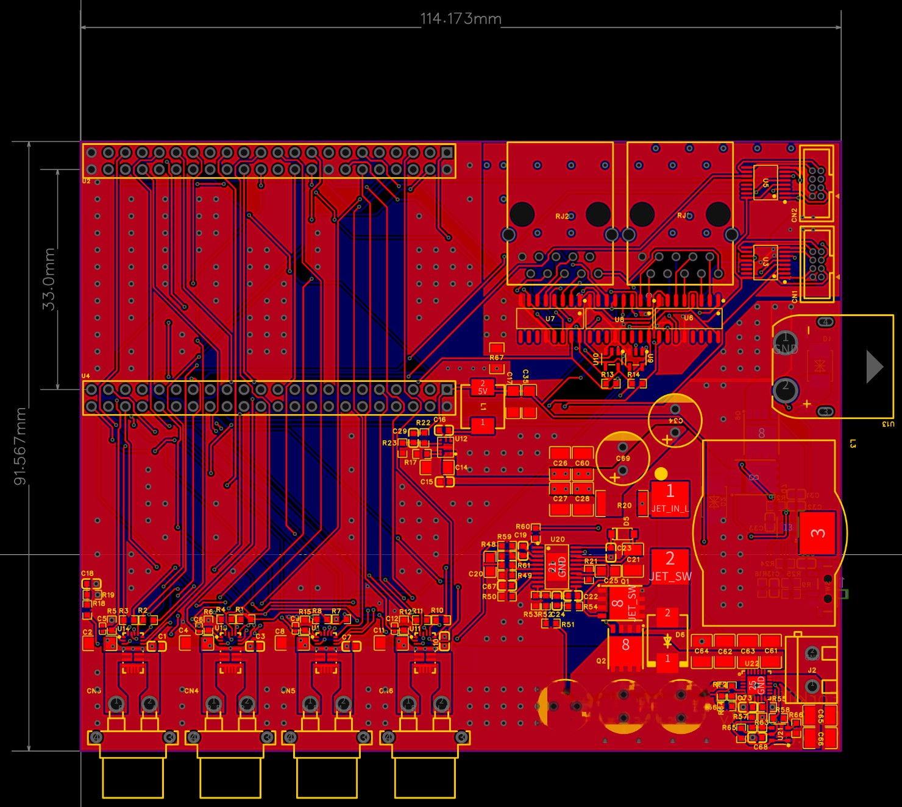
| 연결 대상 | 배정한 신호 |
|---|---|
| 모터 드라이버 4개 | 공유 SPI, 개별 CS·방향·PWM·차단·고장·전류(ADC) |
| 바퀴 엔코더 L·R | A·B·Z 펄스 입력 |
| 조향·승강 절대 엔코더 | SPI 버스와 개별 CS 2개 |
| 통신과 저장장치 | Wi-Fi용 UART, USB, SD 카드(SDMMC) |
| 보조 센서와 표시 | IMU용 SPI CS·인터럽트 자리, 보드 LED |
| 전원 계통 | 전압 변환 방식 | 보호 회로와 조건 |
|---|---|---|
| 배터리 입력 (12 V) | XT60 입력, 주 스위치(SW1) | 배선 50 A 퓨즈, 역전압·저전압(10.41 V)·과전압 차단 |
| 모터 구동 (12 V) | 보호 스위치 통과 직결 | 순간 과전압 흡수 TVS(SMBJ18CA) |
| 로직·센서 (5 V) | LMR60440 강압 (5.016 V, 4 A) | 센서 보드에서 각자 3.3 V로 강압 |
| Jetson (19 V) | LM5122 승압 (목표 3 A) | TPS26630 전류 제한(3.2 A), 19.5 V 차단, 5 V 연동 |
| 배터리 전압 감시 | 1/11 저항 분압 | MCU ADC 연결 준비 (핀 배정 전) |
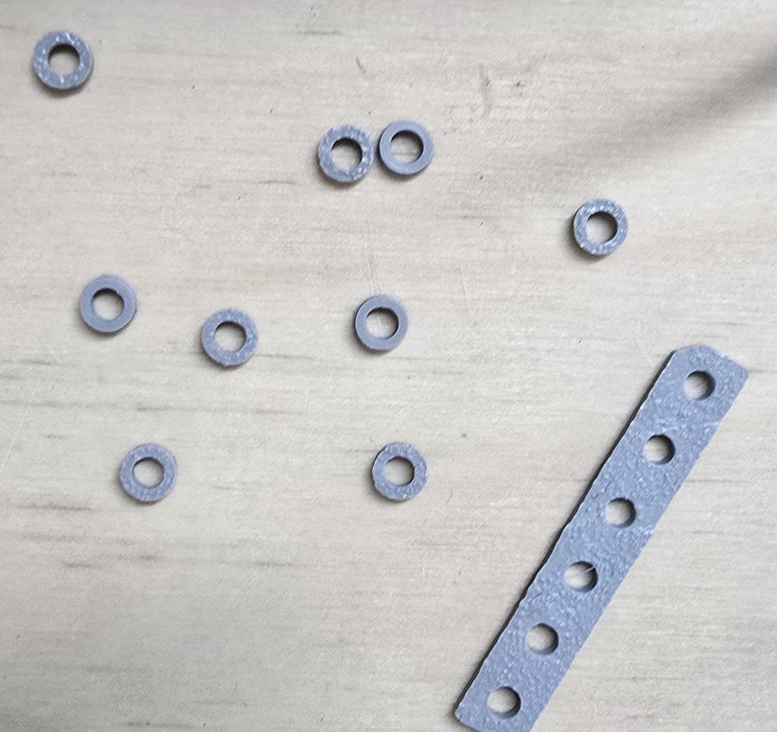
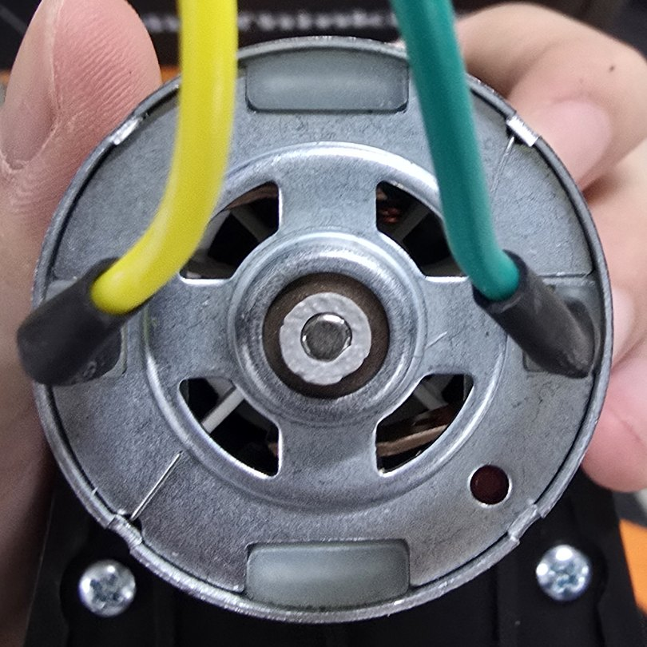
| 항목 | 내용 |
|---|---|
| 구멍 지름 | 3.25 mm |
| 마운트 외경 | 5 mm → 6 mm |
| 다음 단계 | 외경 6 mm 재출력 → 자석 부착 → 엔코더 신호 확인 |
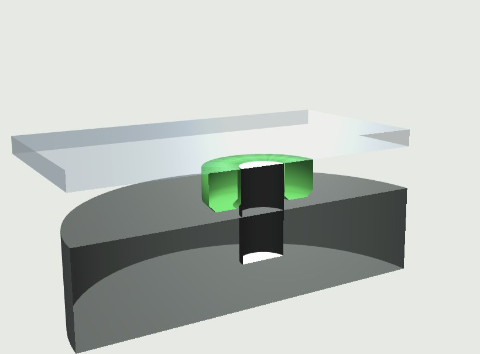
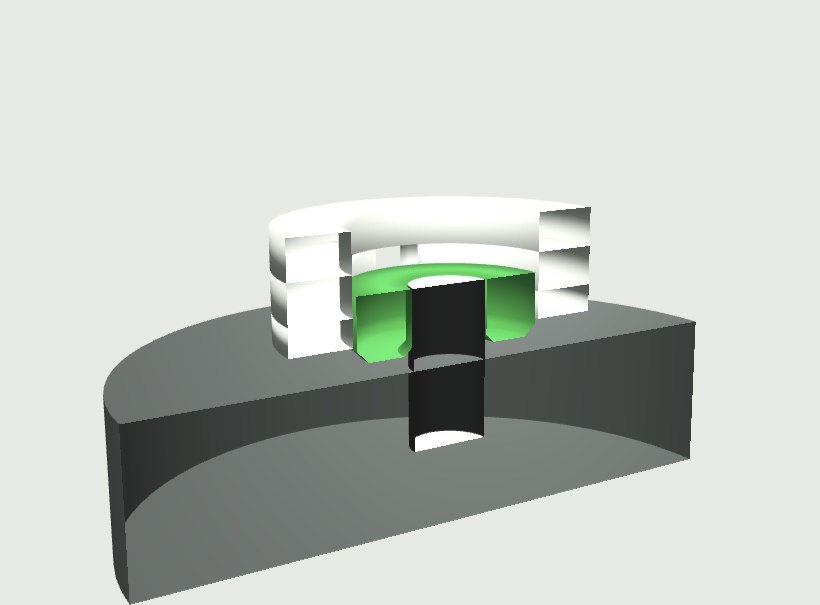
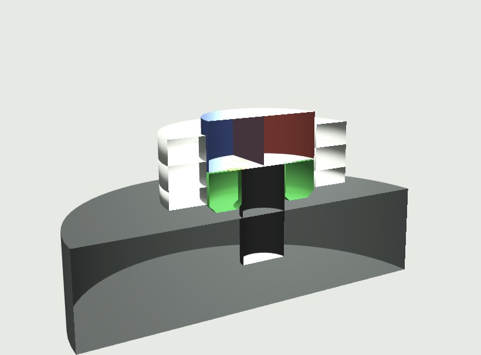
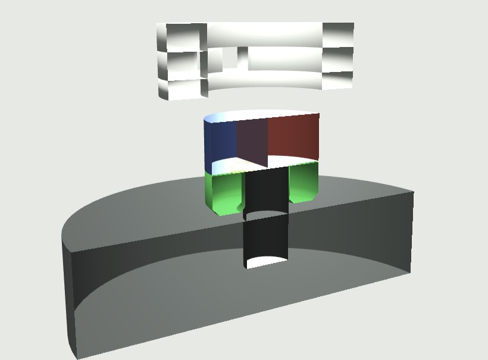
| 보드 | 크기 (mm) | 5장 비용 | 장당 |
|---|---|---|---|
| 메인보드 | 114.2 × 91.6 | $559 + PCB 견적 | 약 $112 + PCB |
| 바퀴 엔코더 (MT6701) | 22.8 × 10.4 | $76 | 약 $15 |
| 절대 엔코더 (KTH7801) | 22.8 × 10.4 | $90 | 약 $18 |
| STDS 변환 보드 | 32.6 × 18.4 | $113 | 약 $23 |
부품값 + JLCPCB 조립 + PCB, 견적 전 추정 (1 USD = 1,400원)
| 기존 | 지금 | |
|---|---|---|
| 방식 | 지도를 만들며 위치 찾기 | 만들어 둔 지도에서 위치만 찾기 |
| 위치 오차 | 9–12 cm | 3–4 cm |
| 1시간 운행 | SLAM 끊김 | 끊김 없음 |
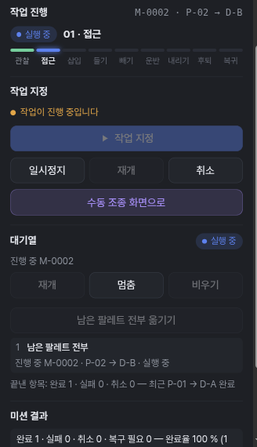
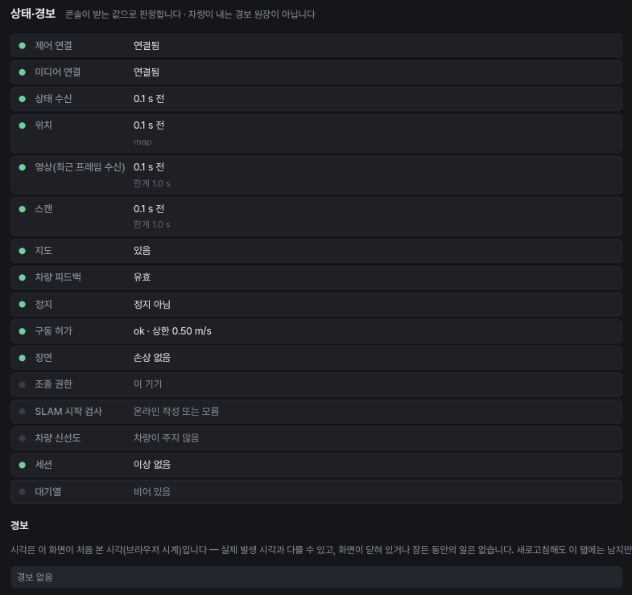
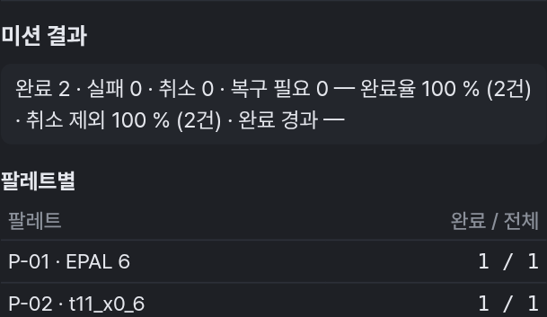
| 구분 | 대상 | 현재 → 다음 단계 |
|---|---|---|
| 하드웨어 | 메인보드 | 회로도와 PCB 배치 완료 → 메인보드 제작 |
| 엔코더 마운트 | 축 구멍 3.25 mm 맞춤 확인 → 외경 6 mm 출력·장착 뒤 신호 확인 | |
| 소프트웨어 | 리보틱스 시연 장면 | 꺼낸 직후 출발 막힘 원인 확인 → 수정안 Isaac 검증 |
| 위치 추정 | 사전 지도 위 오차 3–4 cm → 전역 재위치 추가 |